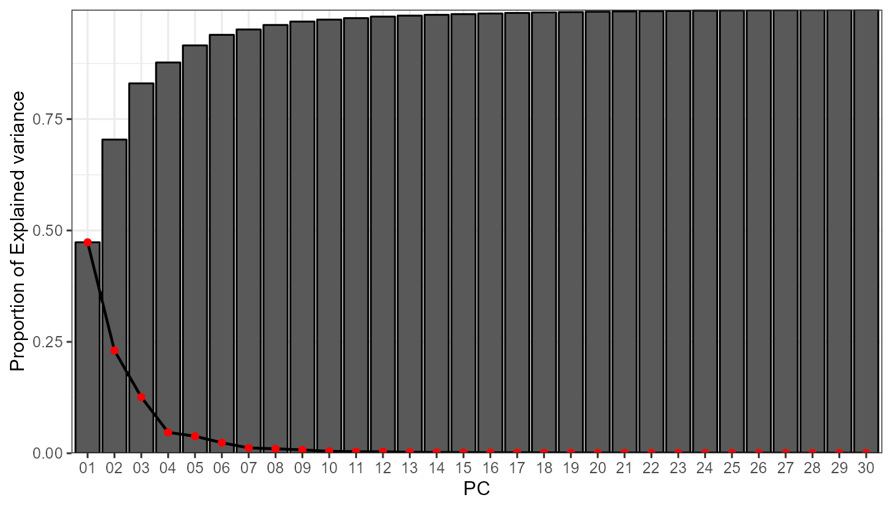

Circulation-To-Environment
Marc Lemus-Canovas
2023-11-02
Source:vignettes/circulation-to-environment.Rmd
circulation-to-environment.RmdThe synoptReg package contains two main methods to
perform a synoptic classification based on the matrix mode. One of them
is the S-mode.
Introduction to the S-mode classification method
The S-mode classification is that in which the grid points (lon-lat)
are the variables and the observations (rows), the days. Thus, the
application of a PCA on this type of matrix establishes the linear
relationships between the time series of all the grid points. In this
sense, the scores obtained in this type of classification show the
degree of representativeness of each day for each of the principal
components (PCs). However, the scores do not allow us to directly obtain
the circulation types (also known as “weather types”), since the same
day can be represented by different PCs. For example, 2018/01/23 may
have a certain degree of representation in the PC1, PC3 and PC6. For
this reason, we need to use the scores (degree of representation) as
coordinates in the multivariate space to execute a clustering method
that ends up creating groups between those days that are most similar to
each other. In addition, the VARIMAX rotation is applied to the retained
PCs in order to redistribute their explained variance. The variance of
the PCs after being rotated will probably not follow a consecutive
order. For example, the PC1 does not have to be the one that accumulates
the highest explained variance. Note that this rotation is not applied
in the pca_decision() function.
In the synoptReg package the clustering method
implemented is the one proposed by Esteban
et al. (2005), based on the extreme scores. Esteban et
al. suggest that the extreme scores (positive and negative) of each
PC (>2 or <-2) can be used as the multivariate coordinates of each
cluster center to apply the k-means algorithm. In this sense, when using
the positive and negative scores, the groups in each component are split
(if for each group these extreme scores are reached). So, if we retain 4
PCs, our final classification can reach up to 8 weather
types/circulation types.
Synoptic classification procedure
In this example we will use the data previously downloaded with the
download_ncep() function. Specifically, we will use the
mslp object already loaded into the package, referring to
the mean sea level pressure. The time period of the atmospheric
variables is from 2000-01-01 to 2010-12-31. A total of 11 years.
library(synoptReg)
#> The legacy packages maptools, rgdal, and rgeos, underpinning the sp package,
#> which was just loaded, were retired in October 2023.
#> Please refer to R-spatial evolution reports for details, especially
#> https://r-spatial.org/r/2023/05/15/evolution4.html.
#> It may be desirable to make the sf package available;
#> package maintainers should consider adding sf to Suggests:.
#>
#> ****
#> Welcome to synoptReg!
#> Using synoptReg for research publication? Please cite it!
#> Lemus-Canovas, M. et al. synoptReg: An R package for computing a synoptic climate classification and a spatial regionalization of environmental data.
#> Environmental Modelling & Software 118, 114-119 (2019). DOI: https://doi.org/10.1016/j.envsoft.2019.04.006.
#> ****
library(tidyverse)
#> ── Attaching core tidyverse packages ──────────────────────── tidyverse 2.0.0 ──
#> ✔ dplyr 1.1.3 ✔ readr 2.1.4
#> ✔ forcats 1.0.0 ✔ stringr 1.5.0
#> ✔ ggplot2 3.4.4 ✔ tibble 3.2.1
#> ✔ lubridate 1.9.3 ✔ tidyr 1.3.0
#> ✔ purrr 1.0.2
#> ── Conflicts ────────────────────────────────────────── tidyverse_conflicts() ──
#> ✖ dplyr::filter() masks stats::filter()
#> ✖ dplyr::lag() masks stats::lag()
#> ℹ Use the conflicted package (<http://conflicted.r-lib.org/>) to force all conflicts to become errors
library(rnaturalearth)
#> Support for Spatial objects (`sp`) will be deprecated in {rnaturalearth} and will be removed in a future release of the package. Please use `sf` objects with {rnaturalearth}. For example: `ne_download(returnclass = 'sf')`
library(metR)
#>
#> Attaching package: 'metR'
#>
#> The following object is masked from 'package:purrr':
#>
#> cross
slp_file <- system.file("extdata", "mslp_ei.nc", package = "synoptReg")
msl_ei <- read_nc(slp_file)
print(msl_ei)
#> class : SpatRaster
#> dimensions : 11, 13, 4018 (nrow, ncol, nlyr)
#> resolution : 2.5, 2.5 (x, y)
#> extent : -16.25, 16.25, 28.75, 56.25 (xmin, xmax, ymin, ymax)
#> coord. ref. : lon/lat WGS 84
#> source : mslp_ei.nc
#> varname : msl (Mean sea level pressure)
#> names : msl_1, msl_2, msl_3, msl_4, msl_5, msl_6, ...
#> unit : Pa, Pa, Pa, Pa, Pa, Pa, ...
#> time (days) : 2000-01-01 to 2010-12-31The first step before executing the synoptic classification is to pass the function tidy_nc(), since it will allow us to join the two atmospheric variables to execute the classification later. It is also possible to subset the time period and the geographical extension. In addition, whether we specify an argument or not, this function computes the anomaly of each atmospheric variable. Such anomaly is computed with respect to the monthly average. If we subset the time period using the time_subet argument, the anomaly will be computed from this last period.
In any case, now we will only group our atmospheric variables. It is mandatory to use a list for grouping variables.
msl_ei_sr <- as_synoptReg(msl_ei)Once the two variables are joined in the same tibble, we can proceed to explore our data set to decide the number of components to retain. For such decision we will use the pca_decision() function. It is important to specify a number of generous components since what we want is to know which number of components explain most of the variance in our data. Also, since we’re working with 2 variables that have different units of measurement, it’s important to normalize/standardize such variables.
info <- pca_decision(msl_ei_sr,ncomp = 30,norm = T,matrix_mode = "S-mode")
info$screeplot #scree test
info$summary[,1:10] # first 10 PCs
#> 1 2 3 4 5 6
#> sdev 8.2273640 5.7411415 4.2465834 2.59031446 2.33961526 1.84155183
#> prop.variance 0.4734711 0.2305518 0.1261396 0.04693286 0.03828785 0.02372138
#> cum.variance 0.4734711 0.7040229 0.8301625 0.87709538 0.91538323 0.93910461
#> 7 8 9 10
#> sdev 1.31226694 1.19991499 1.044715181 0.790432555
#> prop.variance 0.01204527 0.01007101 0.007634276 0.004370204
#> cum.variance 0.95114988 0.96122089 0.968855163 0.973225367After taking a look at the scree test, it seems reasonable to retain 4 PCs, which could allow up to 8 WT. These 4 PCs explain arround 88% of the explained variance. Now, we can already compute the synoptic classification:
cl <- synoptclas(msl_ei_sr,ncomp = 4,norm = T,matrix_mode = "S-mode")
cl
#> $clas
#> # A tibble: 4,018 × 2
#> time WT
#> <date> <int>
#> 1 2000-01-01 1
#> 2 2000-01-02 1
#> 3 2000-01-03 1
#> 4 2000-01-04 1
#> 5 2000-01-05 4
#> 6 2000-01-06 1
#> 7 2000-01-07 1
#> 8 2000-01-08 1
#> 9 2000-01-09 5
#> 10 2000-01-10 5
#> # ℹ 4,008 more rows
#>
#> $grid_clas
#> # A tibble: 1,144 × 8
#> x y time var units WT mean_WT_value cv_WT_value
#> <dbl> <dbl> <date> <chr> <chr> <int> <dbl> <dbl>
#> 1 -15 55 2000-01-01 msl Pa 1 101017. 1.43
#> 2 -15 55 2000-01-05 msl Pa 4 99066. 1.12
#> 3 -15 55 2000-01-09 msl Pa 5 100630. 1.20
#> 4 -15 55 2000-01-14 msl Pa 3 102032. 0.863
#> 5 -15 55 2000-01-22 msl Pa 7 100975. 1.23
#> 6 -15 55 2000-03-12 msl Pa 8 101281. 1.02
#> 7 -15 55 2000-03-21 msl Pa 6 101362. 1.13
#> 8 -15 55 2000-03-28 msl Pa 2 101150. 1.09
#> 9 -12.5 55 2000-01-01 msl Pa 1 101131. 1.40
#> 10 -12.5 55 2000-01-05 msl Pa 4 99083. 1.08
#> # ℹ 1,134 more rowsThe object returned by synoptclas is a list that contains a tibble with each date and its corresponding WT, and another tibble that is a grid with the average value of the atmospheric variables for each CT. With this last result we can create a visualization of these synoptic patterns:
borders <- ne_countries(continent = c("europe","africa"),
returnclass = "sf",
scale = 50)
ggplot()+
geom_contour_fill(filter(cl$grid_clas, var == "msl"),
mapping = aes(x,y,z = mean_WT_value/100),
binwidth = 1)+
geom_sf(data = borders, fill = "transparent")+
geom_contour2(data = filter(cl$grid_clas,var == "msl"),
aes(x=x,y=y,z=mean_WT_value/100),
binwidth = 4, color = "black") +
geom_text_contour(data= filter(cl$grid_clas, var == "msl"),
aes(x=x,y=y,z=mean_WT_value/100),
stroke = 0.15,binwidth = 4,skip = 0) +
guides(fill = guide_colourbar(barwidth = 9, barheight = 0.5))+
facet_wrap(~WT, ncol = 4) +
scale_fill_gradientn(colours = pals::jet(100), name = "MSLP (hPa)") +
scale_x_continuous(limits = c(-15,15), expand = c(0, 0))+
scale_y_continuous(limits = c(30,55), expand = c(0,0))+
theme_bw() +
theme(
panel.grid.major = element_blank(),
panel.grid.minor = element_blank(),
panel.background = element_blank(),
text = element_text(size = 10),
strip.background = element_rect(fill = "transparent", color = NA),
axis.title = element_blank(),
axis.text = element_blank(),
axis.ticks = element_blank(),
legend.position = "bottom")
From circulation types to environment
synoptReg has a function called ct2env() that allows to estalblish the link between the synoptic classification created previously and its link with any environmental variable. In this case, the example uses daily precipitation data from the Balearic Islands (Spain) at a resolution of 5x5 km.
pcp_file <- system.file("extdata", "pcp_spread.nc", package = "synoptReg")
pcp <- read_nc(pcp_file)As you can observe, the structure of the tibble is always the same (variables: lon, lat, time, value) and has to be respected so that all the functions of the package work correctly. How do we calculate the interaction of WTs with precipitation?
ct2pcp <- ct2env(pcp,clas = cl$clas,fun = mean,out = "data.frame")
ct2pcp
#> # A tibble: 1,688 × 5
#> x y WT tp units
#> <dbl> <dbl> <chr> <dbl> <chr>
#> 1 1105672 4458822 1 0.424 mm
#> 2 1105672 4458822 2 3.53 mm
#> 3 1105672 4458822 3 1.53 mm
#> 4 1105672 4458822 4 1.15 mm
#> 5 1105672 4458822 5 1.93 mm
#> 6 1105672 4458822 6 1.42 mm
#> 7 1105672 4458822 7 1.21 mm
#> 8 1105672 4458822 8 1.62 mm
#> 9 1085672 4453822 1 0.420 mm
#> 10 1085672 4453822 2 3.64 mm
#> # ℹ 1,678 more rowsTo visualize the result:
ggplot() +
geom_point(data=ct2pcp, aes(x=x, y=y,color=tp), size =0.2) + # original was mm*10
scale_color_gradientn(colours = rev(pals::linearl(100)),
breaks = c(0.2,1,5,10),
trans = "sqrt",
name = "rainfall (mm)",
na.value="transparent",guide = guide_colorbar(barheight = 0.5)) +
coord_equal()+
facet_wrap(~WT, ncol = 4) +
guides(fill = guide_colourbar(barwidth = 9, barheight = 0.5))+
theme_bw() +
theme(
panel.grid.major = element_blank(),
panel.grid.minor = element_blank(),
panel.background = element_blank(),
text = element_text(size = 10),
strip.background = element_rect(fill = "transparent", color = NA),
axis.title = element_blank(),
axis.text = element_blank(),
axis.ticks = element_blank(),
legend.position = "bottom")
Creating categorized regions. The last step.
Finally, it may be interesting to classify our environmental variables into different regions. Each one of these regions will have different characteristics based on the relation with the precipitation linked to each WT. To carry out such a categorization process, it is necessary that our object ct2pcp is in SpatRaster format:
ct2pcp_r <- ct2env(pcp,clas = cl$clas,fun = mean,out = "SpatRaster")
ct2pcp_r
#> class : SpatRaster
#> dimensions : 35, 53, 8 (nrow, ncol, nlyr)
#> resolution : 5000, 5000 (x, y)
#> extent : 863172, 1128172, 4286322, 4461322 (xmin, xmax, ymin, ymax)
#> coord. ref. : +proj=utm +zone=30 +ellps=GRS80 +towgs84=0,0,0,0,0,0,0 +units=m +no_defs
#> source(s) : memory
#> varname : tp
#> names : 1, 2, 3, 4, 5, 6, ...
#> min values : 0.1599424, 1.656782, 1.129224, 0.4895089, 0.6118959, 1.235447, ...
#> max values : 1.3025937, 8.523975, 3.312900, 2.5515625, 4.5516729, 3.861095, ...
#> unit : mm, mm, mm, mm, mm, mm, ...Now it is a matter of extracting the main spatial patterns of precipitation linked to WTs.
# Regionalization
ct2pcp_reg <- regionalization(ct2pcp_r,centers = 4)
precp_region_df <- raster::as.data.frame(ct2pcp_reg$cluster_rast,
xy = T)
# Visualization:
labels <- c("Region 1","Region 2",
"Region 3", "Region 4")
colours <- c("mediumseagreen","darkgoldenrod1",
"khaki1", "dodgerblue3")
ggplot() +
geom_tile(data=precp_region_df, aes(x=x, y=y,fill=lyr1)) +
scale_fill_gradientn(colours = colours,
guide = "legend", breaks = c(1,2,3,4),
na.value = alpha("white", alpha = 0.0),
labels = labels, name= "")+
theme_bw() +
coord_equal()+
theme(axis.text = element_blank(),axis.title = element_blank(),
legend.position = "bottom", axis.ticks = element_blank())